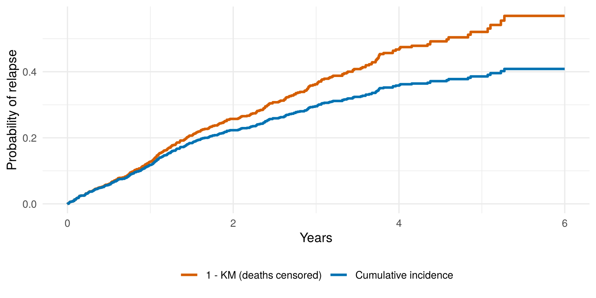
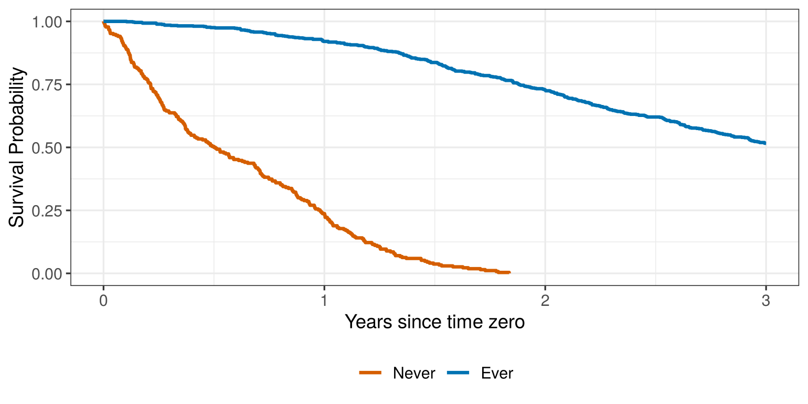

4 Common traps: censoring, competing events and time zero
Warm-up: remember Chapter 3?
Two quick questions to bring back the key ideas from last time.
The three traps in this chapter have something in common. Each one comes from getting wrong who is at risk, and when:
- with informative censoring, the patients who leave the risk set are different from those who stay;
- with competing risks, patients who can no longer have the event are treated as if they still could;
- with immortal time bias, patients are counted in a group before they have actually joined it.
4.1 Trap 1: informative censoring
Chapter 1 introduced the key assumption behind Kaplan–Meier curves, the log-rank test and the Cox model: censoring must be non-informative. A patient who is censored must have the same future risk as the patients who are still being followed.
It’s called informative censoring when that fails, because then the fact that someone was censored tells you something about their risk. Suppose the sickest patients stop coming to clinic because they’re too ill to travel. When one of them is censored, that tells you they were probably about to die. Kaplan–Meier can’t know this. It assumes each censored patient would have done as well as the patients who stayed, so it quietly replaces sick patients with healthier ones.
4.1.1 Interactive app: who drops out?
This app makes it visible. Half the patients are sicker (median survival 6 months) and half are healthier (median 36 months). The dashed line is the true survival curve for the whole group. The solid line is the KM estimate from one simulated study, with 36 months of follow-up. You choose how many patients drop out, and who drops out.
TipThings to try
For each one, predict first, then pick the scenario and check.
- Predict: if everyone is equally likely to drop out, will the KM curve sit above the true curve, below it, or on it? Then look at the default scenario, Everyone equally likely to drop out. Try a few seeds.
- Predict: if the sickest patients drop out, will KM overestimate or underestimate survival? Then pick The sickest drop out.
- Predict: what if the healthiest drop out instead (they feel well and stop attending, or move away)? Then pick The healthiest drop out.
- Go back to The sickest drop out and tick Show each half separately. Does the KM curve for each half match its own true curve?
4.1.2 What you can do about it
The difficulty is that in real data, unlike in the app, you can’t see the true curve. Informative censoring can’t be detected from the survival data alone. What you can do is:
- think about why patients were censored. Administrative censoring (the study ended) is usually harmless. Loss to follow-up deserves a closer look;
- compare patients who were lost to follow-up with those who weren’t, on their characteristics at the start;
- if drop-out depends on things you measured, allow for them (in a Cox model, or with more advanced methods such as inverse probability of censoring weighting);
- report how many patients were lost to follow-up, so readers can judge.
4.1.3 Practice: who dropped out?
This is a live exercise: edit the code, click Run Code, and your answer is checked automatically. See Section 1.4.1 if you haven’t used one before.
The data frame trial (already loaded) has 800 patients followed for up to 36 months. lost is 1 for patients lost to follow-up, and severe is 1 for patients who had severe disease at the start. Check whether the patients who were lost look different from those who stayed. Replace each ______, then click Run Code.
NoteHint 1
tapply(x, group, mean) gives the mean of x in each group. Here x is severe and the groups are defined by lost.
TipSolution
table(trial$lost)
tapply(trial$severe, trial$lost, mean)332 patients were lost to follow-up. 62% of them had severe disease, compared with 41% of the patients who stayed. Drop-out was clearly related to how sick patients were, so the censoring is probably informative. Here, the overall KM estimate of 2-year survival is 50%, when the truth (which we know, because the data are simulated) is 35%. Because severity was measured, you can allow for it: within each severity group, the KM curves are close to the truth.
4.2 Trap 2: competing risks
Suppose the event you care about is relapse of a cancer, but some patients die before they relapse. What do you do with those deaths?
The tempting answer is to treat them as censored: they didn’t relapse during follow-up, after all. But a patient who has died can never relapse. Censoring them tells KM to assume they’re still at risk of relapse, just unobserved, like someone who moved away. These events are called competing risks, because the two events compete: whichever happens first prevents the other.
The result is that 1 − KM overestimates the probability of the event. This simulation has relapse and death without relapse equally common:
set.seed(2026)
n <- 1000
relapse_time <- rexp(n, rate = 0.15) # years
death_time <- rexp(n, rate = 0.15) # death without relapse
end_time <- runif(n, 2, 6) # end of follow-up
cr <- data.frame(time = pmin(relapse_time, death_time, end_time))
cr$event <- ifelse(cr$time == relapse_time, "relapse",
ifelse(cr$time == death_time, "death", "censored"))
cr$event <- factor(cr$event, levels = c("censored", "relapse", "death"))
table(cr$event)#>
#> censored relapse death
#> 323 340 337First the wrong way. Treat each kind of event in turn as the outcome, censoring the other, and look at 1 − KM at 5 years:
km_relapse <- survfit(Surv(time, event == "relapse") ~ 1, data = cr)
km_death <- survfit(Surv(time, event == "death") ~ 1, data = cr)
1 - summary(km_relapse, times = 5)$surv # "risk" of relapse#> [1] 0.5205491 - summary(km_death, times = 5)$surv # "risk" of death#> [1] 0.5218315That says 52% relapse by 5 years and 52% die without relapsing: 104% of patients. That’s impossible, because no patient can do both.
The right way is the cumulative incidence function (CIF): the probability of having had each kind of event by a given time, allowing for the fact that the other event can happen first. survfit() calculates it when the event variable is a factor whose first level is censoring:
cif <- survfit(Surv(time, event) ~ 1, data = cr)
summary(cif, times = 5)#> Call: survfit(formula = Surv(time, event) ~ 1, data = cr)
#>
#> time n.risk n.event Pr((s0)) Pr(relapse) Pr(death)
#> 5 48 669 0.229 0.386 0.385plot_data <- rbind(
data.frame(time = km_relapse$time,
risk = 1 - km_relapse$surv,
method = "1 - KM (deaths censored)"),
data.frame(time = cif$time,
risk = cif$pstate[, "relapse"],
method = "Cumulative incidence")
)
ggplot(plot_data, aes(x = time, y = risk, colour = method)) +
geom_step(linewidth = 1) +
scale_colour_manual(values = c("#D55E00", "#0072B2")) +
labs(x = "Years", y = "Probability of relapse", colour = NULL) +
theme_minimal() +
theme(legend.position = "bottom")
The gap grows over time, as more patients are removed by the competing event. It matters most when the competing event is common, for example in older patients, or for cause-specific outcomes such as death from cancer (where death from other causes competes).
What does 1 − KM actually estimate? The probability of relapse in a hypothetical world where nobody could die first, and even that only under strong assumptions. That’s occasionally the question you want, but usually it isn’t.
4.2.1 Interactive app: when does it matter?
How badly 1 − KM overstates the risk depends on how common the competing event is, and on how long patients are followed. In this app you set the rate of the event of interest (say relapse) and of the competing event (say death), both per year. The solid lines are estimated from one simulated study. The dashed lines are the truth:
- blue dashed: the true probability of relapse, which the cumulative incidence (solid blue) should follow;
- orange dashed: the probability of relapse in a world where nobody could die first, which is what 1 − KM (solid orange) actually estimates.
TipThings to try
For each one, predict first, then pick the scenario and check.
- Predict: if nobody can die first, will the two estimates differ? Then pick No competing event.
- Predict: what happens to the gap when the competing event becomes more common? Then pick Common competing event.
- Predict: with a rare event of interest, a common competing event and long follow-up (like the MGUS example below), how far off is 1 − KM? Then pick Rare event, common competing event.
- Predict: does the problem matter much in a short study? Then pick Short follow-up.
4.2.2 Real data: progression of MGUS
The mgus2 dataset, in the survival package, follows 1384 people with monoclonal gammopathy of undetermined significance (MGUS), a blood condition that can progress to a cancer of plasma cells. Most of these patients are elderly, so many die of other causes before MGUS has the chance to progress. The data have two time columns:
ptimeandpstat: time to progression (in months), and whether it happened (1) or not (0);futimeanddeath: time to death or last follow-up, and whether the patient died.
First we combine them into one time and one event, with three possible values:
mg <- survival::mgus2
# Time to the first event: progression if it happened, otherwise death or last follow-up
mg$etime <- ifelse(mg$pstat == 1, mg$ptime, mg$futime)
# Which event came first
mg$event <- ifelse(mg$pstat == 1, "progression",
ifelse(mg$death == 1, "death", "censored"))
mg$event <- factor(mg$event, levels = c("censored", "progression", "death"))
table(mg$event)#>
#> censored progression death
#> 409 115 860Only 115 patients progressed, but 860 died first. Compare the two estimates of the risk of progression at 10, 20 and 30 years (120, 240 and 360 months):
# Wrong: deaths treated as censored
km_prog <- survfit(Surv(etime, event == "progression") ~ 1, data = mg)
1 - summary(km_prog, times = c(120, 240, 360))$surv#> [1] 0.09522166 0.20956162 0.42483694# Right: cumulative incidence
cif_mg <- survfit(Surv(etime, event) ~ 1, data = mg)
summary(cif_mg, times = c(120, 240, 360))#> Call: survfit(formula = Surv(etime, event) ~ 1, data = mg)
#>
#> time n.risk n.event Pr((s0)) Pr(progression) Pr(death)
#> 120 424 781 0.4045 0.0637 0.532
#> 240 57 177 0.1762 0.0998 0.724
#> 360 3 15 0.0818 0.1340 0.7841 − KM says that 42% of patients will have progressed by 30 years. The cumulative incidence is 13%. The difference is the patients who died first: 1 − KM pretends they were still at risk of progression for decades. For a patient being told about their risk, the second number is the relevant one.
4.2.3 Comparing groups: rates or probabilities?
With competing risks there are two different questions you can ask about a group difference, and two kinds of Cox model to answer them:
- A cause-specific Cox model treats competing events as censored. That sounds like the mistake above, but for hazard ratios it’s fine. It answers: “among patients still alive and event-free, does the group change the rate of progression?” This is usually the question when you want to know whether something causes the event, or whether a treatment works.
- A Fine–Gray model compares the cumulative incidence itself. It answers: “does the group change the probability of progression, in a world where patients can also die?” This is usually the question for prediction and planning.
The two can give different answers. Here’s the cause-specific model for progression, and for death, comparing men with women and adjusting for age:
# Cause-specific Cox model for progression (deaths censored)
coxph(Surv(etime, event == "progression") ~ sex + age,
data = mg) |>
broom::tidy(exponentiate = TRUE, conf.int = TRUE) |>
select(term, estimate, conf.low, conf.high, p.value)#> # A tibble: 2 x 5
#> term estimate conf.low conf.high p.value
#> <chr> <dbl> <dbl> <dbl> <dbl>
#> 1 sexM 0.975 0.674 1.41 0.894
#> 2 age 1.01 0.997 1.03 0.114# Cause-specific Cox model for death (progressions censored)
coxph(Surv(etime, event == "death") ~ sex + age,
data = mg) |>
broom::tidy(exponentiate = TRUE, conf.int = TRUE) |>
select(term, estimate, conf.low, conf.high, p.value)#> # A tibble: 2 x 5
#> term estimate conf.low conf.high p.value
#> <chr> <dbl> <dbl> <dbl> <dbl>
#> 1 sexM 1.48 1.29 1.70 1.68e- 8
#> 2 age 1.07 1.06 1.07 1.06e-71Among patients still alive and progression-free, men and women progress at the same rate (HR for men 0.98, 95% CI 0.67 to 1.41). But men die faster (HR 1.48). So fewer men live long enough to progress, and the probability of progression is lower in men: by 10 years, 5.5% of men have progressed, compared with 7.4% of women. Both statements are true. They answer different questions.
4.2.4 Practice: cumulative incidence by sex
This is a live exercise: edit the code, click Run Code, and your answer is checked automatically. See Section 1.4.1 if you haven’t used one before.
The mgus2 data are loaded as mg. Build the time and event variables, then estimate the cumulative incidence of progression and death by sex, and look at them at 10 years (120 months). Replace each ______, then click Run Code.
NoteHint 1
The first level of the factor must be censoring: "censored".
NoteHint 2
Surv(etime, event), with the factor as the event, gives cumulative incidences. 10 years is 120 months.
TipSolution
mg$etime <- ifelse(mg$pstat == 1, mg$ptime, mg$futime)
mg$event <- ifelse(mg$pstat == 1, "progression",
ifelse(mg$death == 1, "death", "censored"))
mg$event <- factor(mg$event, levels = c("censored", "progression", "death"))
cif_sex <- survfit(Surv(etime, event) ~ sex, data = mg)
summary(cif_sex, times = 120)By 10 years, 7.4% of women and 5.5% of men had progressed, while 48% of women and 58% of men had died without progressing. Men are less likely to progress mainly because more of them die first: the cause-specific model showed no difference in the rate of progression.
4.3 Trap 3: immortal time bias
Kaplan–Meier curves compare groups that are defined at time zero: sex, age group, the treatment someone was randomised to. A tempting mistake is to group patients by something that only happens later, such as “received a transplant”, “responded to treatment” or “ever took drug X”. This gives the “yes” group a large, entirely artificial survival advantage.
4.3.1 Why is it called “immortal” time?
Picture the timelines of two patients who would both start treatment a few months after diagnosis:
time zero treatment starts
| |
Patient A: |--- waiting ----|==== treated ====| died
Patient B: |-- waiting --X (died before treatment)Patient A ends up in the “treated” group. But to get there, A had to survive the whole waiting period. Nobody in the treated group can have died while waiting: anyone who did, like patient B, never started treatment and ends up in the “untreated” group instead.
So the waiting time of every treated patient is time during which they could not die, as if they were temporarily immortal. Hence the name. The naive analysis makes two errors at once:
- it counts that immortal time as treated follow-up, so the treated group gets credit for survival that has nothing to do with the treatment;
- the deaths that happened during waiting periods, like patient B’s, are all counted in the untreated group, which makes it look worse.
Both errors push in the same direction: the treatment looks protective even if it does nothing at all.
4.3.2 A treatment that does nothing
This simulation makes 1000 patients whose survival has nothing to do with treatment. Each patient would start treatment at a random time in the first 2 years, but only if they’re still alive by then.
set.seed(42)
n <- 1000
# Survival times, unrelated to treatment
death_time <- rexp(n, rate = 0.35)
# When each patient's treatment would start
start_time <- runif(n, 0, 2)
# Follow-up ends at 3 years
imm <- data.frame(
time = pmin(death_time, 3),
status = as.numeric(death_time <= 3)
)
# "Ever treated" only if still alive when treatment was due
treated_in_time <- start_time < imm$time
imm$ever_treated <- factor(treated_in_time,
levels = c(FALSE, TRUE),
labels = c("Never", "Ever"))
survfit2(Surv(time, status) ~ ever_treated, data = imm) |>
ggsurvfit(linewidth = 1) +
scale_color_manual(values = c("#D55E00", "#0072B2")) +
labs(x = "Years since time zero")
The curves could hardly be further apart, and the log-rank test gives a tiny p-value. Yet the treatment does nothing. Notice too that every “untreated” patient died: the only way to stay untreated was to die before your treatment was due to start.
This is not just a textbook curiosity. A well-known 2001 study reported that Oscar-winning actors lived almost 4 years longer than other actors, but it counted winners’ lives from birth, including the years before they won. Nobody can die before winning an Oscar and still be a winner. A reanalysis that handled the immortal time properly found a difference of about 1 year, with a confidence interval that included zero (Sylvestre et al. 2006).
4.3.3 How to avoid it
There are two standard fixes. Both make sure that patients are only counted as “treated” from the moment they actually start treatment.
A landmark analysis. Pick a time point (the landmark), e.g. 1 year. Keep only patients still alive and followed at the landmark, classify them by their status at that time, and start the clock again there:
# Landmark at 1 year: keep patients still alive at 1 year,
# grouped by whether they had started treatment by then
imm$start_time <- start_time
lm1 <- subset(imm, time > 1)
lm1$treated_by_1 <- as.numeric(lm1$start_time < 1)
survdiff(Surv(time, status) ~ treated_by_1, data = lm1)#> Call:
#> survdiff(formula = Surv(time, status) ~ treated_by_1, data = lm1)
#>
#> N Observed Expected (O-E)^2/E (O-E)^2/V
#> treated_by_1=0 393 193 186 0.297 0.616
#> treated_by_1=1 343 166 173 0.318 0.616
#>
#> Chisq= 0.6 on 1 degrees of freedom, p= 0.4At the landmark, the two groups have the same survival (p = 0.4), which is the correct answer. The drawbacks are that the result depends on the landmark you choose, and patients who start treatment after it are counted as untreated.
A time-varying covariate in a Cox model. Each patient counts as untreated until the day they start treatment, and treated afterwards. To do this, each patient’s follow-up is split into periods, one row per period. A patient who starts treatment at 0.2 years and dies at 1.9 years gets two rows: untreated from 0 to 0.2, and treated from 0.2 to 1.9. The tmerge() function in the survival package builds these rows:
imm$id <- seq_len(nrow(imm))
# Treatment start time, or NA if the patient never started
imm$treat_start <- ifelse(imm$start_time < imm$time, imm$start_time, NA)
tv <- tmerge(imm[, c("id", "time", "status")], imm, id = id,
death = event(time, status),
treated = tdc(treat_start))
head(tv[, c("id", "tstart", "tstop", "death", "treated")])#> id tstart tstop death treated
#> 1 1 0.0000000 0.5666766 1 0
#> 2 2 0.0000000 0.2195664 0 0
#> 3 2 0.2195664 1.8882721 1 1
#> 4 3 0.0000000 0.7392050 0 0
#> 5 3 0.7392050 0.8099744 1 1
#> 6 4 0.0000000 0.1091197 1 0The Cox model then uses the counting-process form of Surv(), with a start and a stop time:
coxph(Surv(tstart, tstop, death) ~ treated, data = tv) |>
broom::tidy(exponentiate = TRUE, conf.int = TRUE) |>
select(term, estimate, conf.low, conf.high, p.value)#> # A tibble: 1 x 5
#> term estimate conf.low conf.high p.value
#> <chr> <dbl> <dbl> <dbl> <dbl>
#> 1 treated 0.947 0.759 1.18 0.632The HR is 0.95 (95% CI 0.76 to 1.18): close to 1, the truth. The waiting time is now correctly counted as untreated time.
4.3.4 Interactive app: watching immortal time happen
Here you can see the immortal time, and how much it distorts the naive analysis. Some patients would be offered treatment at some point during their first few years of follow-up; the rest never would. Each line in the timeline is a patient:
- an orange stretch is waiting time before treatment starts: immortal time, since a patient who died then would never have joined the treated group;
- a blue stretch is time on treatment;
- a grey line is a patient who was never treated. A small orange tick past the end of a grey line marks where an untreated patient would have started treatment if they hadn’t died first, like patient B above.
The estimates compare the naive analysis (grouping by “ever treated”) with a landmark analysis and a time-varying Cox model.
TipThings to try
For each one, predict first, then pick the scenario and check.
- Predict: if treatment does nothing, what will the naive HR be? Then look at the default scenario, Treatment does nothing, and find some orange ticks past the end of grey lines.
- Predict: does the bias get bigger or smaller if treatment starts sooner? Or later? Then pick Short wait (up to 3 months) and Long wait (up to 3 years).
- Predict: if treatment is genuinely harmful (HR 1.5), could the naive analysis still make it look protective? Then pick Treatment is harmful (HR 1.5). Try Treatment really works (HR 0.7) too.
- Predict: what happens if everyone would eventually be treated, as in the simulation earlier in this section? Then pick Everyone is eventually treated.
- On the default scenario, move the landmark between 0.5 and 1.5 years. What happens to the landmark estimate and to the number of patients it uses?
4.3.5 Real data: the Stanford heart transplant study
The classic example comes from the Stanford heart transplant programme, which started in 1967. Patients were accepted onto the programme and then waited for a donor heart. Some received one; others died while waiting. Early analyses compared patients who received a transplant with those who didn’t, and found a huge benefit. Later analyses showed that much of that benefit was immortal time (Gail 1972; Crowley and Hu 1977).
The survival package has the data in two forms. jasa has one row per patient. Here’s the naive analysis, comparing patients who ever had a transplant with those who didn’t, from the day they joined the programme:
jasa <- survival::jasa
jasa$futime <- as.numeric(jasa$fu.date - jasa$accept.dt) # days in the programme
coxph(Surv(futime, fustat) ~ transplant, data = jasa) |>
broom::tidy(exponentiate = TRUE, conf.int = TRUE) |>
select(term, estimate, conf.low, conf.high, p.value)#> # A tibble: 1 x 5
#> term estimate conf.low conf.high p.value
#> <chr> <dbl> <dbl> <dbl> <dbl>
#> 1 transplant 0.266 0.165 0.429 0.0000000569A hazard ratio of 0.27: transplant appears to cut the hazard of death by nearly three-quarters. But the patients who died while waiting all count in the “no transplant” group. heart has the same patients in counting-process form, already split at the time of transplant, so transplant is a time-varying covariate. You’ll fit that model in the exercise at the end of this chapter.
The key lesson for all of this: make sure time zero is the same moment for everyone, and that group membership is known at that moment (Chapter 1). In the simulated cohort in Chapters 5–7, everyone’s clock starts when the treatment decision is made, so there is no immortal time.
Quick quiz
Choose an answer to each question. You’ll get instant feedback and can change your answer as often as you like.
4.4 Exercise
4.4.1 Exercise 4.1
The Stanford heart transplant data are loaded in two forms: jasa, with one row per patient, and heart, with each patient’s follow-up split at the time of their transplant. The exercise has two parts, each checked separately.
Part 1: the naive analysis
Fit a Cox model comparing patients who ever had a transplant (transplant) with those who didn’t, using futime (days in the programme) and fustat (1 = died). Make the model the last line.
NoteHint 1
The time is futime and the event is fustat.
TipSolution
coxph(Surv(futime, fustat) ~ transplant, data = jasa)The naive HR is 0.27 (95% CI 0.17 to 0.43): transplant looks as if it cuts the hazard of death by 73%. But every patient who died while waiting for a heart counts in the “no transplant” group.
Part 2: transplant as a time-varying covariate
In heart, each row is a period of follow-up from start to stop (days), event is 1 if the period ended in death, and transplant is 0 before the transplant and 1 afterwards. Look at the first few rows, then fit the Cox model with transplant as a time-varying covariate (make that the last line). How does the HR compare with part 1?
NoteHint 1
The counting-process form of Surv() takes three arguments: the start time, the stop time and the event.
NoteHint 2
Surv(start, stop, event).
TipSolution
head(heart)
coxph(Surv(start, stop, event) ~ transplant, data = heart)Patients who received a transplant have two rows: one before the transplant (transplant = 0) and one after (transplant = 1). With transplant as a time-varying covariate, the HR is 1.14 (95% CI 0.63 to 2.05). There is no clear evidence that transplant improved survival in these data. The apparent 73% reduction was almost entirely immortal time bias.
(This doesn’t show that heart transplantation is useless: results have improved enormously since the 1960s, and it is now a standard treatment. The point is that the naive comparison is badly biased.)
4.5 Summary
Answering the question. All three traps produce clean-looking output and convincing p-values. In the examples here, informative censoring made 2-year survival look like 50% when it was 35%; ignoring competing deaths tripled the apparent 30-year risk of MGUS progression, from 13% to 42%; and immortal time turned a heart transplant HR of 1.14 (Exercise 4.1) into an apparent 73% reduction in the hazard of death. The fixes are standard and use the same survival package, as long as you recognise the trap first.
4.6 Further reading
All of these are free to read online unless marked otherwise. The whole book’s reading list, grouped by topic, is in Appendix C.
- Austin et al. (2016): Start here for competing risks: cumulative incidence, cause-specific and Fine–Gray models, with examples.
- Suissa (2008): The classic description of immortal time bias, with real examples from drug studies and how to avoid it. (May need institutional access.)
- Therneau et al. (n.d.-b): The survival package’s guide to time-dependent covariates, including
tmerge(), landmark analysis and the Stanford heart transplant data. - Leung et al. (1997): More advanced. The different kinds of censoring, and why the non-informative censoring assumption matters. (May need institutional access.)